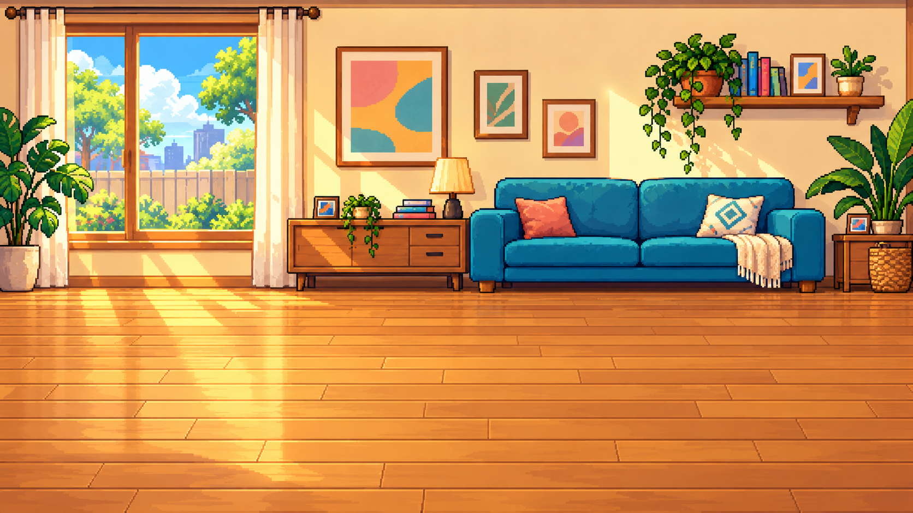
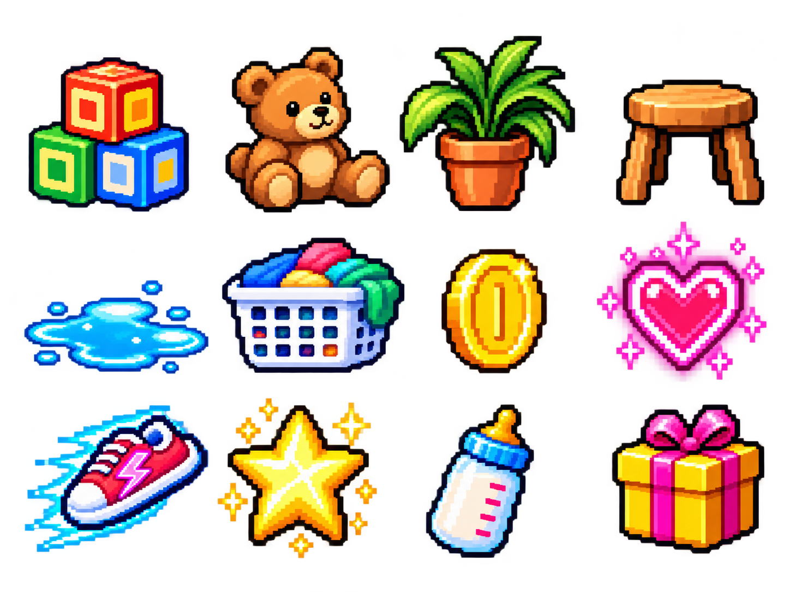

Pedin Run! · Laboratório de animação
Primeira geração dos personagens. Confira as poses em movimento e abra a prancha completa para revisar cada quadro.
Pranchas geradas ainda precisam de revisão de alinhamento, contagem de poses e continuidade antes de entrar no jogo. Esta prévia assume a grade solicitada de 8 × 4.
Sala · direção do cenário
Fundo plano inicial. As camadas de parallax e a adaptação para repetição horizontal serão preparadas na integração.

Objetos, obstáculos e itens
Prancha de produção inicial · os objetos ainda precisam de recorte e ajuste de escala para o jogo.
